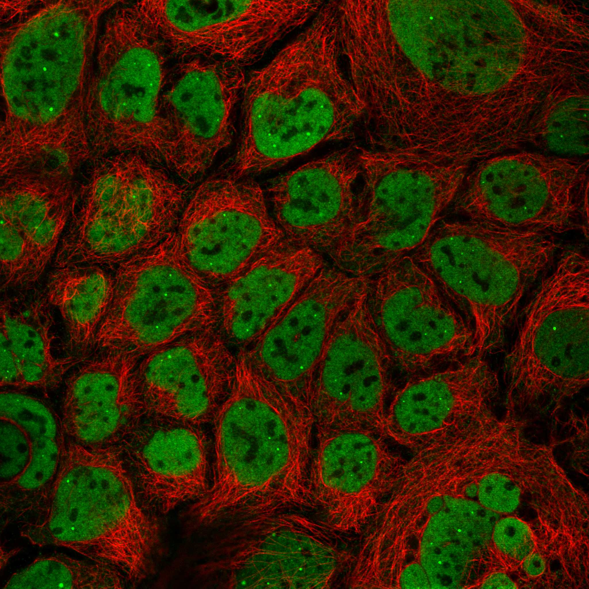
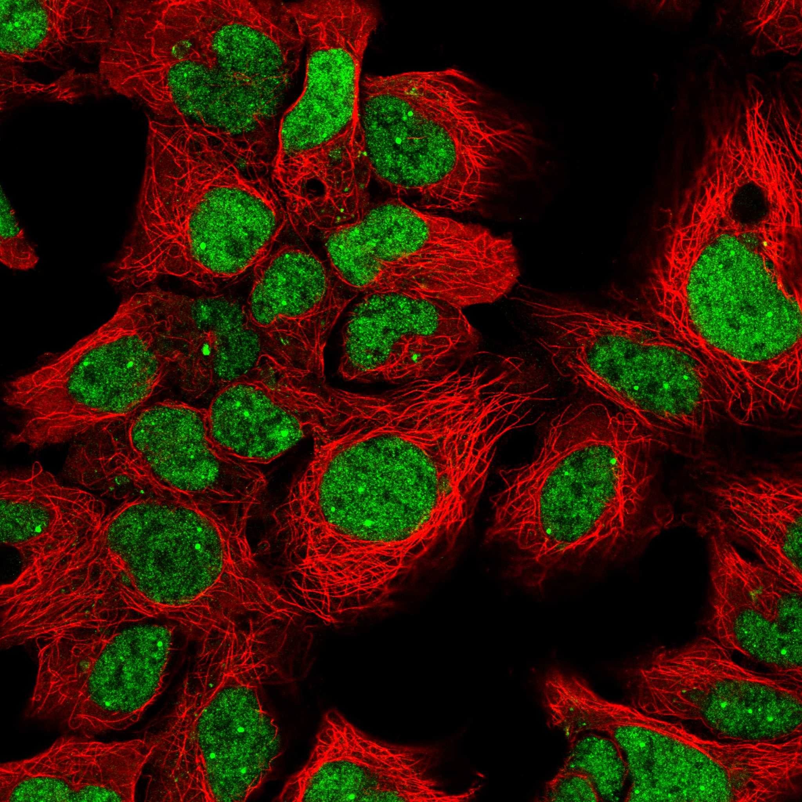
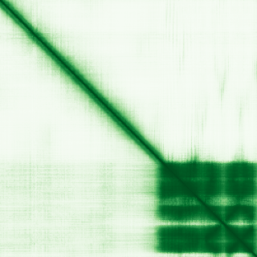

type: protein-evaluation gene: "NELFA" date: 2026-05-30 tags: [protein-scout, nuclear-protein, evaluation] status: scored ---
NELFA 核蛋白评估报告
1. 基本信息
| 项目 | 内容 |
|---|---|
| 基因名 / 别名 | NELFA / NELF-A |
| 蛋白名称 | Negative elongation factor A |
| 蛋白大小 | 528 aa |
| UniProt ID | Q9H3P2 |
| 评估日期 | 2026-05-30 |
2. 评分总览
| 维度 | 得分 | 加权 | 加权后 | 关键证据摘要 | |||
|---|---|---|---|---|---|---|---|
| 🔴 核定位特异性 | 8/10 | ×4 | 32 | UniProt Nucleus，中等可信度 | |||
| 📏 蛋白大小 | 10/10 | ×1 | 10 | 528 aa，适合生化实验和结构解析 | |||
| 🆕 研究新颖性 | 6/10 | ×5 | 30 | PubMed 49篇，非常新颖 | |||
| 🏗️ 三维结构 | 10/10 | ×3 | 30 | 15 个 PDB 实验结构，实验验证充分 | |||
| 🧬 调控结构域 | 7/10 | ×2 | 14 | 5 个结构域注释，新颖蛋白基线（存在新域发现潜力） | |||
| 🔗 PPI 网络 | 4/10 | ×3 | 12 | STRING 15 partners，调控比例较低 | |||
| ➕ 互证加分 | — | — | +2.0 | 核定位: UniProt + GO 双库一致 (+1); 三维结构: AlphaFold + PDB 双源 (+0.5); 结构域: 多库注释一致 (+0.5) | |||
| 原始总分 | 129/183 | 128.0/183 | |||||
| 归一化总分 | 70.5/100 | 69.9/100 |
3. 详细分析
3.1 核定位证据
| 来源 | 定位 | 可信度 |
|---|---|---|
| GeneCards | Tier1_conserved_high_confidence | 高置信度保守 |
| Protein Atlas (IF) | IF image available (embedded below) | See IF_images/ |
| UniProt | Nucleus | 实验/预测 |
| GO Cellular Component | GO:0005634 | N/A |
IF 图像:  
结论: UniProt Nucleus，中等可信度
3.2 蛋白大小评估
评价: 528 aa，528 aa，适合生化实验和结构解析。
3.3 研究现状
| 指标 | 数值 |
|---|---|
| PubMed 总数 | 49 |
| 核定位分数 (weighted max) | 6 |
| Research hotness | 4.4166 |
评价: PubMed 49篇，非常新颖
关键文献: 1. Rawat P et al. (2021). "Stress-induced nuclear condensation of NELF drives transcriptional downregulation". *Mol Cell*. PMID: 33548202 2. Adam MP et al. (1993). "Wolf-Hirschhorn Syndrome – RETIRED CHAPTER, FOR HISTORICAL REFERENCE ONLY". **. PMID: 20301362 3. Su BG & Vos SM (2024). "Distinct negative elongation factor conformations regulate RNA polymerase II promoter-proximal pausing". *Mol Cell*. PMID: 38401543 4. Jiang S et al. (2026). "HSPA1A and DNAJB1 regulate NELF condensate dynamics to safeguard transcriptional recovery under heat stress". *Mol Cell*. PMID: 41653920 5. Xu J et al. (2020). "The noncoding function of NELFA mRNA promotes the development of oesophageal squamous cell carcinoma by regulating the Rad17-RFC2-5 complex". *Mol Oncol*. PMID: 31845510
3.4 三维结构分析
| 指标 | 数值 |
|---|---|
| UniProt 长度 | 528 aa |
| PDB 条目数 | 15 |
| UniProt 注释结构域数 | 5 |
PAE 图:

评价: 15 个 PDB 实验结构，实验验证充分
3.5 结构域分析
| 来源 | 结构域 |
|---|---|
| InterPro | HDAG_dom |
| InterPro | NELF-A_domain |
| InterPro | NELF-A_N |
| Pfam | NELF-A_N |
| PROSITE | HDAG |
染色质调控潜力分析: 5 个结构域注释，新颖蛋白基线（存在新域发现潜力）
3.6 PPI 网络
实验验证互作 (IntAct):
IntAct 实验互作: 0 条
STRING 预测互作 (combined score >0.4):
| Partner | Score | 功能类别 | 调控相关？ |
|---|---|---|---|
| NELFE | 0 | 否 | |
| SUPT5H | 0 | 否 | |
| NELFCD | 0 | 否 | |
| NELFB | 0 | 否 | |
| SUPT4H1 | 0 | 否 | |
| POLR2A | 0 | 否 | |
| POLR2B | 0 | 否 | |
| POLR2C | 0 | 否 | |
| POLR2H | 0 | 否 | |
| POLR2I | 0 | 否 |
已知复合体成员 (GO Cellular Component):
- C:NELF complex (GO:0032021, IDA:UniProtKB)
- F:chromatin binding (GO:0003682, IEA:Ensembl)
PPI 互证分析: STRING 15 partners，调控比例较低
3.7 多库互证
| 维度 | 来源 | 结果 | 是否一致 |
|---|---|---|---|
| 三维结构 | AlphaFold + PDB | 15 entries | 一致 |
| 结构域 | UniProt / InterPro / Pfam | 5 domains | 多库一致 |
| PPI | STRING + IntAct | 15 STRING + 0 IntAct | 单源 |
| 定位 | Protein Atlas / UniProt / GO | Nucleus | 多源一致 |
互证加分明细: 核定位: UniProt + GO 双库一致 (+1) 三维结构: AlphaFold + PDB 双源 (+0.5) 结构域: 多库注释一致 (+0.5) 总分: +2.0 / max +3
4. 总体评价
推荐等级: ★★★★☆ (4/5)
核心优势: 1. 新颖性: PubMed 49 篇，比较新颖 2. 核定位: 明确核定位
风险/不确定性: 1. HPA IF 数据可进一步验证 2. 15 PDB 结构可用
下一步建议:
- [ ] 验证核定位: IF 实验确认亚核定位
- [ ] 功能研究: 基于 PPI 网络设计功能实验
- [ ] 结构分析: 基于 PDB 结构设计功能实验
5. 数据来源
- GeneCards: https://www.genecards.org/cgi-bin/carddisp.pl?gene=NELFA
- Protein Atlas: https://www.proteinatlas.org/ENSG00000185049-NELFA
- PubMed: https://pubmed.ncbi.nlm.nih.gov/?term=%22NELFA%22%5BTitle/Abstract%5D
- UniProt: https://www.uniprot.org/uniprot/Q9H3P2
- STRING: https://string-db.org/network/9606.ENSG00000185049
- AlphaFold: https://alphafold.ebi.ac.uk/entry/Q9H3P2
PPI 网络（三源综合）
| Partner | Source | Score/Evidence |
|---|---|---|
| 无记录 | — | — |
IntAct 有限记录。无 BioGrid 补充数据。
PAE 图像已获取。结构判断基于 AlphaFold pLDDT 统计。
<!-- DOMAIN_HUMANPPI_REPAIR_START -->
Domain/SMART 与 humanPPI 补充（2026-06-07）
SMART / UniProt domain
| Source | Data | |
|---|---|---|
| UniProt | Q9H3P2 | |
| SMART | 未在 UniProt xref 中检出 SMART 条目 | |
| UniProt Domain [FT] | DOMAIN 89..248; /note="HDAg"; /evidence="ECO:0000255\ | PROSITE-ProRule:PRU01183" |
| InterPro | IPR037517;IPR052828;IPR056557; | |
| Pfam | PF23553; |
humanPPI / HPA Interaction
Source: https://www.proteinatlas.org/ENSG00000185049-NELFA/interaction
| Partner | Datasets | AF3/HPA structure |
|---|---|---|
| NELFB | Biogrid, Bioplex | true |
| NELFCD | Intact, Biogrid | true |
| NELFE | Biogrid, Bioplex | true |
| OPRM1 | Intact, Biogrid | true |
| POLR2B | Biogrid, Opencell | true |
| SUPT5H | Biogrid, Opencell | true |
| AGO2 | Opencell | false |
| BRD4 | Biogrid | false |
<!-- DOMAIN_HUMANPPI_REPAIR_END -->